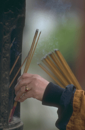
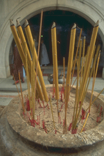

| Даосизм http://schools.keldysh.ru/school1413/religija/dao.htm |
|  |  |
| Испокон веков новости о Китае всегда были новостями об изменениях в образе жизни людей. Гражданские войны, мировые войны, революции, политические новшества - всегда подобные перемены накладывали отпечаток на всю жизнь людей. В Китае так же, как и везде, менялись религии. Многие из древних традиций и обрядов уже не соблюдаются, и многие идеи не понятны современным китайцам.
Древнюю землю Китая относительно мало затрагивали новейшие достижения в науке и образовании вплоть до начала.двадцатого века. Однако столетия тому назад жил китайский мудрец Лао-Цзы, который верил и учил, что мир развивается в соответствии с божественным предначертанием, что находит свое отражение в повторяющихся и упорядоченных явлениях природы. Суть мудрости и счастья, по словам Лао-Цзы, заключается в том, чтобы человек приспособился к этому порядку и воссоздал в себе самом путь, по которому движется мир. Жизнь и мысль Лао-Цзы оказали глубокое влияние на жизнь и развитие Китая. Мир был бы беднее без него. Его учения вместе с учениями его последователей составили философскую базу даосизма. Но когда мы внимательно вглядываемся в прошлое Китая - примерно за 600 лет до нашей эры - мы видим лишь слабые и неясные очертания этого мудреца, юмориста, философа и пророка. Образ Лао-Цзы более походит на легендарный. Однако многие ученые утверждают, что этот человек жил на самом деле. Существуют истории о том, что его посетил Конфуций и что два философа вели беседы. Имя Лао-Цзы упоминается в книгах, написанных людьми следующего поколения. Лао-Цзы традиционно приписывается авторство небольшой увлекательной книги "ДаоДе Цзин", которая легла в основу даосизма. Лао-Цзы видел вокруг себя множество людей, ломающих голову над неразрешимыми вопросами, и это побудило его высказаться. Эти вопросы не очень отличались от тех, которые мы с вами задаем даже сегодня. И они повторяются из поколения в поколение. "Кто я?" "Что есть моя жизнь?" "Живу ли я настолько хорошо, насколько это возможно?" "Кем бы я мог быть?" "Как я могу жить лучше?" "Каковы результаты попыток жить лучше?" Китайцы с оптимизмом смотрели на мир, и когда они спрашивали, то делали это с уверенностью и с надеждой. Природа действует не по капризу. А китайцы считают, что они являются частью природы. Еще Лао-Цзы, глядя на окружавших его людей, видел, что некоторые из них борются за счастье, не вспоминая о том, чему учили традиции. Он видел, как люди пытаются изменить то, что им предлагает жизнь, вместо того, чтобы принять это. И он сказал: "Вы ищете мудрость, доброту и удовлетворение. Но в выборе способов, которыми вы стремитесь этого достичь, вы глупы и слепы. Неужели вы не способны понять, что мудрость - это вера, доброта - это принятие, а удовлетворение - это простота? Так устроен мир". Еще задолго до Лао-Цзы путь, по которому развивается мир, был назван Дао, что означает просто "путь" или "путь, по которому идти". До сих пор это переводилось как "природа" или "путь природы". Это путь, по которому движется вселенная. Человек - часть вселенной. Когда люди наиболее естественны, они живут в соответствии с законами взаимодействия различных частей вселенной. Если бы предоставить Дао свободу действовать среди людей, то все шло бы наилучшим образом, ведь Дао - это путь совершенства: совершенного развития, совершенной гармонии. Дао - это источник всего сущего. Он - причина возникновения всего, даже китайских богов. Однако Дао никогда не считался богом. Дао - это реальность. Он существовал до того, как возникла вселенная. Он сотворил все существующее и продолжает поддерживать его существование через высвобождение своей энергии. Подъемы и спады, приливы и отливы, создание и распад - эти противоположности энергии Дао дали начало существованию, которое будет продолжаться. И все-таки Дао никогда не принуждает человека действовать определенным образом. Дао только направляет. Даосизм был назван так потому, что Лао-Цзы и его последователи настойчиво утверждали, что Дао - это образ жизни. Их девизом было "назад к природе", "природу" следовало понимать в смысле естественного и надлежащего порядка вещей. Ранние даосисты настолько безоговорочно верили в это, что они призывали покончить с обрядами и обычаями и даже с самой цивилизацией, ибо все это является следствием вмешательства в природу. Первые даосисты часто говорили об ушедшем "Золотом веке", когда люди жили в мире и гармонии, потому что они были естественными, свободными и простыми, короче - людьми Дао. Блага, к которым стремятся все люди, были утрачены, когда этот век миновал. Люди обретут их только тогда, когда вернутся к простоте и полной естественности, которые были свойственны "Золотому веку". "Природа" - это ключ ко всем ответам даосистов на вопросы, которые нас заставляет задавать жизнь. Высшее благо человека, его настоящее счастье может быть найдено в гармонии с природой, Дао. Лишь когда кто-нибудь естественен, он внутренне спокоен и способен принять то, что предлагает жизнь. Когда кто-либо честолюбив или агрессивен, он противоречит своей истинной природе. Ведя войну с самим собой, он наносит смертельный удар своему возможному счастью. В то время, как Лао-Цзы беспристрастно заявлял, что люди должны успокоиться и принимать мир таким, каков он есть, вместо того, чтобы пытаться изменить его, существовало множество других, которые громко выражали свое несогласие. Некоторые философы, среди которых был Конфуций, ходили по свету, убеждая всех, кто их слушал, что единственный способ, которым люди могут вернуть себе счастье и процветание, - это стать добродетельными. Когда каждый человек научится исполнять свой долг и выполнять свои обязанности, тогда все люди, живущие на земле, станут счастливыми. Они также ссылались на ушедший "Золотой век", когда счастье было скорее правилом, чем исключением. Однако они утверждали, что ценности "Золотого века" можно возродить, если люди научатся общаться друг с другом. "Не так, не так!" - провозглашали первые даосисты. Добродетели и долга достигли те, кто позволил себе идти и делать то, что получалось естественно. Почему человеку следует стремиться к благу? Благо приходит само, когда все правила забыты и попытки прекращены. Тот, кто ищет добродетель, никогда не обретет ее. Долг исполняется только тогда, когда не пытаешься его исполнить. Лао-Цзы не питал симпатий к типичному реформатору, который стремился вводить правило за правилом, чтобы улучшить жизнь. Он отмечал, что уже после того, как люди сбились с пути, реформатор взывает: "Будьте чистыми, будьте праведными! Я скажу вам, как этого достичь". После того, как в семье возникает разлад, родители начинают призывать детей к уважению и послушанию. Это также справедливо и для народов, потому что только во времена всеобщих потрясений люди вспоминают о патриотизме. Природа никогда не спорит так, как это делают люди. Природа просто остается естественной. Да и какой довод может изменить путь, по которому движется мир? Сила земного притяжения не спорит с нами и не настаивает, она просто действует. Лао-Цзы указывал, что Дао также никогда не применяет силу, тем не менее нет ничего такого, чего бы он не достиг. Могущество Дао именно в том, что он действует неустанно, без усилий и напряжения. Человек, исповедующий Дао, не будет использовать силу, потому что сила разрушает его высокие цели. Человек, который пытается сделать мир таким, каким он хочет его видеть, наносит вред и себе, и другим. Тот, кто упорствует или стремится добиться чего-то, погружается в свои собственные усилия и попросту теряет ценность того, что ищет. Таким образом он разрушает свой идеал, уничтожает цель и терпит полный крах. Возьмем, к примеру, пруд с грязной водой. Сколько ни мешай в нем воду, она чище не станет. Но если оставить его в покое, он очистится сам по себе. То же самое и с людьми, и с народами. Особенно это следует понимать правителям. Лао-Цзы как-то сказал, что управлять людьми следует так же, как готовить мелкую рыбешку: то есть осторожно. Если ее слишком долго жарить или слишком много мешать, то она или раскрошится, или станет невкусной. Что же касается людей, которые предпочитают учить других, им следует усвоить эту мысль. Тот, кто думает, что знает много о других, может считать себя мудрым. Но только тот, кто знает себя, владеет истиной и величием. Лао-Цзы и самый известный поздний последователь Дао Чжуан-Цзы (около 350-275 года до н.э.) высказывались неохотно, потому что настоящий Дао не может быть выражен словами. Язык не в силах описать человека Дао. Однако от обоих мудрецов требовали определений. И тогда Лао-Цзы облек в слова следующее: Он осторожен, как тот, кто пересекает реку зимой. Он нерешителен, как тот, кто опасается своих соседей. Он скромен, как тот, кто пришел в гости. Он податлив, как лед, который вот-вот начнет таять. Даосисты чувствуют, что такое описание уравновешенного и спокойного человека является истинным не потому, что его дал нам Лао-Цзы или кто-то еще, а потому, что отражает природу вещей, Дао. Однажды Чжуан-Цзы удил рыбу, когда несколько высокопоставленных сановников из правительства этой провинции нанесли ему визит. В то время, как он продолжал сидеть с удочкой, они польстили ему тем, что заговорили о его мудрости и предложили высокий правительственный пост, который принес бы ему признание и уважение многих людей. Не прекращая своего занятия, Чжан-Цзы спросил этих людей, знают ли они о священной черепахе, которая умерла более трех тысяч лет тому назад и которую принц бережно хранит в ларце на алтаре своих предков. Затем он спросил: "Как вы думаете, что предпочла бы эта черепаха: быть мертвой, чтобы перед ее останками благоговели, или быть живой и вилять хвостом в грязи родного пруда?" - "Она бы предпочла быть живой и вилять хвостом в грязи", - ответили ему. "Вы можете идти, - сказал Чжуан-Цзы. - Я тоже предпочитаю вилять хвостом в грязи моего собственного пруда". Итак, что же представляет реальную ценность? На что человеку следует тратить свои силы? Он не может просто сидеть сложа руки и ждать. Раз уж он живет среди людей, он должен думать об остальных. Ранние даосисты бесстрашно смотрели в лицо трудностям повседневной жизни в этом мире. Они знали, что они должны и в жизни придерживаться той же философии, что и в мыслях. Они решили, что существуют три вещи - три сокровища, как они их назвали, - которые являются высшими наставниками человека Дао. Это любовь, умеренность и смирение. Как же эти три качества помогали последователям Дао жить в этом мире? "Любя, можно быть храбрым; будучи умеренным, можно быть обеспеченным; не пытаясь выделиться в этом мире, можно управлять всеми начальниками". Тот, кто видит Дао внутри себя, видит его и в других, и во всем мире. Это как раз тот человек, который видит, что его благополучие - это добро для всех людей. А добро для всех - это также и его добро. Вот что Лао-Цзы подразумевал под словами "быть в состоянии любви". Человек Дао будет творить добро всем людям: и хорошим, и плохим, платя любовью даже за сильную ненависть. Если этого не делать, то независимо от того, насколько справедливо человек отвечает на ненависть, какая-то ее часть или ее результат останутся. В состоянии любви человек может быть смелым. Человек Дао относится к миру с доверием, и мир может доверять ему. Человек Дао сдержан в своих мыслях и поступках. Излишества в любой области препятствуют удовлетворению. Последователь Дао не будет заранее решать, какие в точности действия он предпримет в каждой конкретной ситуации. Он также не будет заранее решать, что не поведет себя определенным образом. Он всегда помнит, что в своих мыслях и действиях надо следовать тому, что представляется наиболее простым и естественным. В этом случае его действия всегда целесообразны и всегда правильны. "Тот, кто умерен, может быть обеспечен". Лао-Цзы и его последователи никогда не стремились к высоким правительственным постам, так как это противоречило их убеждениям. Невозможно помочь людям, пытаясь руководить их действиями. И они показывали, как человек может быстрее достичь своих целей, занимая скромное место. В нашем мире нет места для превосходства одних над другими. Важно, чтобы все люди жили естественно, в атмосфере взаимопомощи. Пусть никто не стремится к личному обогащению или успеху. Небеса вечны, земля постоянна. Как они стали такими? Это произошло потому, что они не заботились о собственных жизнях. Вот почему они живут так долго. Поэтому Мудрец ставит себя на задний план, но он всегда впереди. Остается в стороне, но всегда присутствует. Не потому ли он не добивается какой-то личной цели, что все его личные цели уже удовлетворены. Сокровища, которые представляют собой эти качества, не захоронены настолько глубоко, чтобы их невозможно было откопать без учителя, друга или философа. Они обнаруживаются, когда мы начинаем осознавать то, что глубоко скрыто в нашей природе и что мы обычно игнорируем. Мы обнаруживаем эти сокровища, счищая слой за слоем наши страхи, привычки и поверхностные устремления. Отсутствие этих качеств делает нас подавленными, неестественными и несчастными. Если вдуматься, заявляет даосист, то как можно претендовать на то, чтобы предложить правила для праведной жизни? Как можно чувствовать такую уверенность в своих знаниях, чтобы делать подобное? Самоуверенный человек, который претендует на то, что он так много знает, вероятно делает это для своего собственного эго. По-настоящему мудрый человек не знает о том, что он мудр. Уверенность в своем знании в то время, как его нет -- специфическая болезнь, присущая всем людям. И только когда нас берет досада от такой самонадеянности и самообмана, мы можем вылечиться оt этой болезни. Стремясь помочь людям сделать это, Чжуан-Цзы часто высказывался об этом с легким юмором. Он рассказывал, как однажды во сне он был бабочкой, радостно порхающей тут и там. Он больше совершенно не ощущал себя человеком. Затем он внезапно проснулся и обнаружил, что он все еще человек и лежит в постели. Однако тогда Чжуан-Цзы вынужден был спросить себя: "Был ли я тогда человеком, которому снилось, что он бабочка, или сейчас я - бабочка, которой снится, что она -- человек?" Что есть истина? Как я узнаю, что я знаю? Это вопросы, на которые действительно мудрый человек не сможет ответить определенно, в то время как множество мнимых мудрецов ответы предложат. Все ответы зависят от времени, места и обстоятельств. Человек Дао забывает списки ответов, игнорирует правила поведения, поднимается над моралью и этикой. Человек Дао не подчиняется никаким внешним авторитетам. Он просто внимательно вслушивается в свою собственную глубинную природу. Поступая так, он не только находит истину, но также и живет в соответствии с ней. Потому что в его глубинной природе присутствует Дао, который управляет четко и решительно. Человек Дао может познать весь мир, не покидая своего дома. Таковы были слова первых даосистов, которые предпочли бы вообще ничего не говорить. Они знали, что их представления о жизни не могут быть наилучшим образом выражены в словах. Их представления могли бы быть поняты только теми, кто разделил бы их как результат своего собственного опыта. Каждый из нас в то или иное время терпел неудачу, пытаясь выразить самые глубокие чувства и озарения. В такие моменты мы можем выразить себя в поэзии, музыке и других формах искусства. Это также справедливо и для даосистов. Если мы намерены их понять, то следует отдавать себе отчет в том, что мы имеем дело с поэзией их представлений. Слова не следует понимать буквально, поскольку они не в состоянии выразить представления. Однако слова даосизма следует воспринимать серьезно. Даосизм Лао-Цзы и Чжуан-Цзы продолжает свою жизнь в основном в идеях, которые он предложил другим, более сильным и долговечным религиям. Конфуцианство вобрало в себя даосистскую веру в то, что человек в основе своей добр. Буддизм в Китае с его изначальным признанием важности познания своей глубинной сути был усилен и в чем-то изменен этой местной религией. Как религиозная философия даосизм пришел в упадок, но он многих привел к пониманию того, что внутренняя жизнь человека - это именно та жизнь, которая и является важной. |